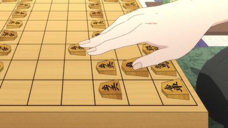
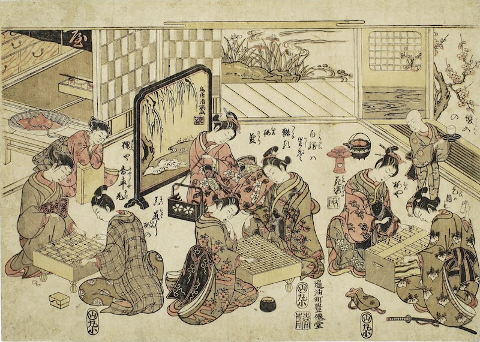

Shogi - Japanese chess
Shogi or Japanese chess is a traditional logical and strategy chess-like game from Japan. Even non-chess players find out that Japanese chess is fun and many people who don't like chess, love to play shogi!
Shogi is very famous in its native homeland of Japan, where it has a very rich tradition and history.
The biggest difference from classic chess is that all captured opponent's pieces can be returned back to the game as your own on any empty square. Another difference is that most of the pieces can be upgraded when they reach the promotion zone (the last 3 rows). In Shogi there are almost no tie games.
About Shoghi
Shogi is a traditional Japanese strategy board game, similar to Western chess. Current chess players will be happy to know that shogi will improve their game by at least one class.
Shogi comes in numerous variants. In addition to the traditional Japanese characters (1-kanji and 2-kanji sets), there is a version with international symbols.

Shogi is similar to the classic game of chess, but has interesting changes and addition to the rules. The main change is the re-entry of captured pieces (“drop rule”), which makes the game more engaging and makes unexpected turnover possible. Another addition is the promotion of all pieces. The pieces become stronger, and make the game more interesting (Explained further in the rules). New players who have never played chess before can become proficient within two or three games, thanks to our special marking. An experienced chess player can learn even sooner. It is truly a great game for professionals who are looking for a challenge as well as for beginners.

Shogi History
The exact origin of Shogi is unknown, but it most likely evolved from Chinese chess when it was delivered by the imperial ambassador during the rule of Nara (710-794). It became popular with Japanese nobility in the Heian period (794 - 1185) when the Japanese capital moved from Nara to Kyoto.
The origin of the re-entry of captured playing pieces is not known, but it was probably introduced in the 16th century. At that time, captured soldiers had two options, execution or enter a battle for the enemy.
The modern shogi was developed from a version of Sho-shogi (Small shogi). The rules were officially established and precisely formulated at the beginning of the Edo period (1600-1868; Edo is the former name of Tokyo).

(Source: http://www.jade.co.jp)
FAQ
Shogi is similar to the classic game of chess, but even people who dislike chess have found this game to be fun. The main differences between the games are the upgrading of all pieces, and the re-entry of captured pieces. A radical change can happen anytime in the game.
1. Are the rules very complicated?
A beginner can understand the rules in only 5 minutes! :)
2. What if I don’t understand Japanese?
We don’t know Japanese either, that is why we added helpful arrows. Players do not have to learn Japanese, or even know chess to play Shogi.
3. Do Shogi and Chess go together well?
Absolutely! Shogi helps improve chess strategy, especially becoming more aggressive. Shogi is a much more complicated game, while in chess there are 10^123 possible combinations, Shogi has an incredible 10^224 combinations.
Starting Placement
First row:
Lance | Knight | Silver General | Gold General | King | Gold
General | Silver General | Knight | Lance
Second row:
Second column from left: Bishop
Second column from right: Rook
Third row:
All Pawns

Rules of the Game
In practice, furigoma is tossed. One of the players takes 5 pawns, shakes and tosses them on the board as dice. If the number of promoted pawns facing up is higher than unpromoted pawns, the other player opens the game.
If players are equally strong, then players decide who throws furigoma.

Furigoma
Then, both players alternately make a move during each turn.
For each turn, a player may either move or drop just one piece.
A player may not give up his turn, also known as passing.
Players are not obligated to move a piece already touched. One may even pick up a piece from the game board and see what is on the other side of the piece. However, when the move is completed and a hand leaves the piece, the move can no longer be retracted.

own piece and opponent’s piece
Object of the Game
The object of the game is to checkmate to your opponent = attacking the opposing king which cannot be adequately parried or defended or which results in removing the opposing king from the game board.
Or one of the players resigns, or the opponents agree on a stalemate (draw).
Check: If a king is endangered and is threatened to be captured in the next move, this danger must be averted, if possible. The player giving check does not have to announce the check. (It means the king can be taken on the next turn and the player who lost the king loses the game.)
Checkmate (in Japanese, one says “Tsumi”): If a player cannot avert a danger and will be taken anyway on the next turn, this is checkmate and that player loses the game.
In professional and serious amateur games, a player who makes an illegal move immediately loses the game.
Repetition: the game ends if the same game position occurs four times consecutively – the game is considered a draw. However, if an eternal check originated from this situation, the player giving check and causing such a situation loses the game.
The game reaches a jishogi if both kings have advanced into their respective promotion zones and neither player can hope to mate the other or to gain any further material. If this happens, the winner is decided as follows:
all promoted pieces are canceled and points for individual pieces (including those captured) are summed up. Each rook and bishop scores 5 points and all other pieces except kings score 1 point each. A player scoring less than 24 points loses, otherwise the game is considered a draw.
Movement of the Pieces
Pieces can move as shown by arrows on the respective pieces. No piece other than the knight can move over one's own or enemy piece which stands in the way of its potential move.
 |
King
A king can move one square in any direction, orthogonal or diagonal. |
|
 |
Gold general
A gold general can move one square orthogonally, or one square diagonally forward, giving it six possible destinations. It cannot move diagonally backward. |
|
 |
Silver general
A silver general can move one square diagonally or one square directly forward, giving it five possibilities. |
|
 |
Promoted silver General Lose their ability to current move and gain properties of gold general. |
|
 |
Bishop
A bishop can move any number of free squares along any one of the four diagonal directions. |
|
 |
Promoted bishop
It moves like a bishop or a king, but each turn only one of two ways. |
|
 |
Rook
A rook can move any number of free squares along any one of the four orthogonal directions. |
|
 |
Promoted rook
It moves like a rook or a king, but each turn only one of two ways. |
|
 |
Lance
A lance can move any number of free squares directly forward. It cannot move backward or to the sides. |
|
 |
Promoted lance
Lose their ability to current move and gain properties of gold general. |
|
 |
Knight
Knight moves like chess knights, in an “big L” shape, but can only move forward. |
|
|
Promoted knight
Lose their ability to current move and gain properties of gold general. |
|
 |
Pawn
A pawn can move one square directly forward. It cannot retreat. |
|
 |
Promoted pawn
Lose their ability to current move and gain properties of gold general. |
Promotion of Pieces
The last 3 rows on the game board are called the “promotion zone”. When a piece is moved and part of a pieces's path lies within the promotion zone (that is, if the piece moves into, out or wholly within the zone), then such piece can be promoted at the end of the turn (the piece is turned over revealing the red character).
Promotion is an option. However, promotion is mandatory for pawns and lances in the last row and for knights in the last two rows.
A piece is always promoted at the end of its move (it is a part of the turn). A piece loses its previous skills and moves in the next turn as indicated on it after it is turned. A promoted piece cannot be unpromoted or demoted (turned back) while still in play on the board. Pieces become demoted when they are captured.
A small character in the lower right-hand corner is an aid only for the players to see what piece has been promoted.

Capturing Pieces
Pieces are captured as follows: the attacking piece takes the place of the captured enemy piece (capturing by placement). Captured pieces are removed from the game board. A player who captured the piece acquires the piece and places it aside to be seen, next to the game board on his side, and always shown as an unpromoted piece.
Capturing pieces is optional. It is not mandatory to capture an enemy piece, it is always up to the player to decide if and when to capture an opponent's piece.
Drops
On any turn, a player may either move a piece on the board or drop a captured piece onto the board.
A player may drop a captured piece on any empty square on the board as his own (that's why the pieces are differentiated only by their oriented tips, not by colors).
By dropping a piece, a check can be given (endangering of the king does not have to be announced), or even a checkmate can be given (except by a pawn).
A piece can be dropped in the path of danger and to cancel a check.
A piece is always dropped unpromoted side up, even if dropped into the promotion zone.
A piece should be dropped on a field where it is still possible to move such a piece for at least one more move. Pawns and lances cannot be dropped onto the last row while knights cannot be dropped on the last two rows.
A pawn cannot be dropped in a column containing another unpromoted pawn of the same player (promoted pawns do not count).
A pawn cannot be dropped to give an immediate checkmate (although other pieces can); however, pawns may give checkmate on any subsequent move after the pawn was dropped.